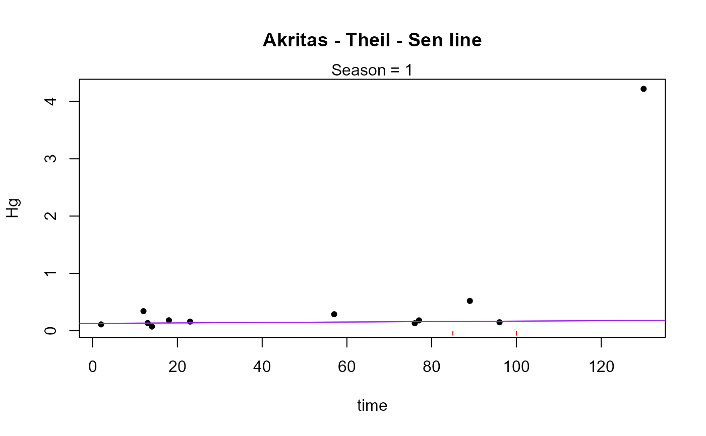
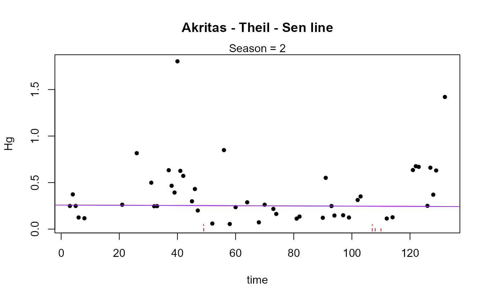
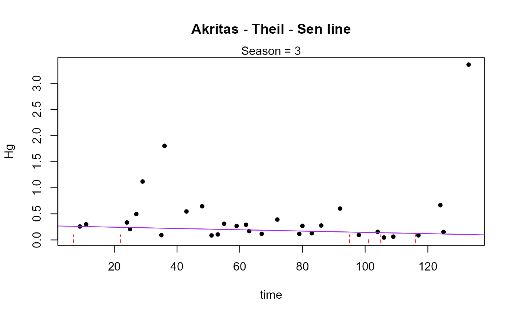

Seasonal Kendall permutation test on censored data
censeaken(
time,
y,
y.cen,
group,
LOG = FALSE,
R = 4999,
nmin = 4,
seaplots = FALSE,
printstat = TRUE,
...
)Arguments
- time
Column of the time variable, either a sequence of days or decimal times, etc. Will be the scale used for time in the trend analysis.
- y
The column of y (response variable) values plus detection limits
- y.cen
The y-variable indicators, where 1 (or
TRUE) indicates a detection limit in they.varcolumn, and 0 (orFALSE) indicates a detected value iny.var.- group
Column of the season classifications. A factor in R, so usually though not necessarily a text variable. If numeric, define as a factor before running the script.
- LOG
Indicator of whether to compute the trend analysis in the original y units, or on their logarithms. The default is to use the logarithms (LOG =
TRUE). To compute in original units, specify the option LOG =FALSE(or LOG = 0).- R
The number of repetitions in the permutation process. R is often between 999 and 9999 (adding +1 to represent the observed test statistic produces 1000 to 10000 repetitions). By default R=4999. Increasing R results in lower variation in the p-values produced between runs.
- nmin
The minimum number of observations needed for the entire time period to be tested, per season. For example, with 1 sample per year per season over an 8-year period, you have 8 observations for each season. You can increase this number if you want a higher minimum. Don’t decrease it below the default of 4. If there are fewer than nmin values that season is skipped and not included in the overall test and a note of this will be printed in the console.
- seaplots
In addition to the plot of the overall Seasonal Kendall trend line, plots of the trend in individual seasons can also be drawn.
- printstat
Logical
TRUE/FALSEoption of whether to print the resulting statistics in the console window, or not. Default isTRUE.- ...
other inputs associated with modifying plots produced by this function.
Value
Prints the Kendall trend test results for each season individually. The overall Seasonal Kendall test and Theil-Sen line results are both printed and returned.
Details
For each season the ATS function is used to compute the season's Kendall-S statistic and p-value for the trend test. The test is the usual ATS procedure, not a permutation test. For the overall test there are R (default 4999) random rearrangements of data that are generated with no mixing of data from one season to another season within a permutation -- data over time within a season are randomized. This retains any between-seasons differences while removing any trend from year to year to use as the permuted "representation of the null hypothesis" of no trend in the R Seasonal Kendall tests. For a 2-sided trend test the p-value is the number of the absolute value of the permutation S statistics that are equal to or greater than the absolute value of the observed S from the original data, plus 1 (for the observed S of the original data), divided by the total (R+1) S values.
The censeaken function differs from other R packages that do not incorporate censored data in their trend tests (EnvStats, Kendall, rkt and others) in that censeaken uses all of the data across the years without an option to equalize each year's or season's influence by using the overall mean or median of the period's data rather than the original observations. Seasons with more data will have more influence on the outcome, just as years with more data will have more influence. If the numbers of observations differ enough between seasons or years that this is of concern, it is up to the user to perhaps eliminate some data in data-rich periods that are most unlike the conditions or times of data collected in sparse periods. Or to compute summary statistics such as the median of each season/year combination and run the test on the medians, though this will result in a loss of power to detect trends and will require the user to use methods such as those in NADA2 to compute medians when there are censored data.
If seaplots=TRUE each season's trend line will be plotted seperately. A plot of the overall Seasonal Kendall (Akritas-Theil-Sen) line is always plotted.
If seaplots=FALSE only the overall Seasonal Kendall (Akritas-Theil-Sen) line will be plotted on a data scatterplot.
References
Helsel, D.R., 2011. Statistics for censored environmental data using Minitab and R, 2nd ed. John Wiley & Sons, USA, N.J.
Hirsch, R.M., Slack, J.R., Smith, R.A., 1982. Techniques of Trend Analysis for Monthly Water Quality Data, Water Res. Reseach 18, 107-121.
See also
Examples
# \donttest{
data(Brumbaugh)
# Artificial time and season variables for demonstration purposes
Brumbaugh$time=1:nrow(Brumbaugh)
Brumbaugh$sea=as.factor(round(runif(nrow(Brumbaugh),1,4),0))
with(Brumbaugh,censeaken(time,Hg,HgCen,sea,seaplots = TRUE))
#>
#> DATA ANALYZED: Hg vs time by sea
#> ----------

#> Season N S tau pval Intercept slope
#> 1 1 18 7 0.0458 0.82022 0.25226 0.001324
#> ----------

#> Season N S tau pval Intercept slope
#> 1 2 38 36 0.0512 0.65925 0.12677 0.0002298
#> ----------

#> Season N S tau pval Intercept slope
#> 1 3 46 -94 -0.0908 0.3782 0.22401 -0.0006805
#> ----------
 #> Season N S tau pval Intercept slope
#> 1 4 31 -130 -0.28 0.028006 0.41612 -0.002686
#> ----------
#> Seasonal Kendall test and Theil-Sen line
#> reps_R N S_SK tau_SK pval intercept slope
#> 1 4999 133 -181 -0.0768 0.2222 0.25022 -0.0004083
#> ----------
# }
#> Season N S tau pval Intercept slope
#> 1 4 31 -130 -0.28 0.028006 0.41612 -0.002686
#> ----------
#> Seasonal Kendall test and Theil-Sen line
#> reps_R N S_SK tau_SK pval intercept slope
#> 1 4999 133 -181 -0.0768 0.2222 0.25022 -0.0004083
#> ----------
# }